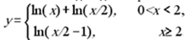
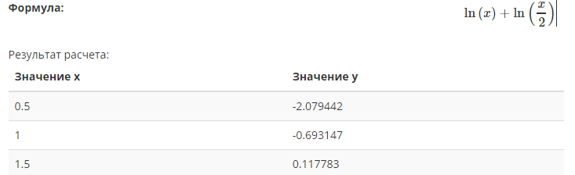
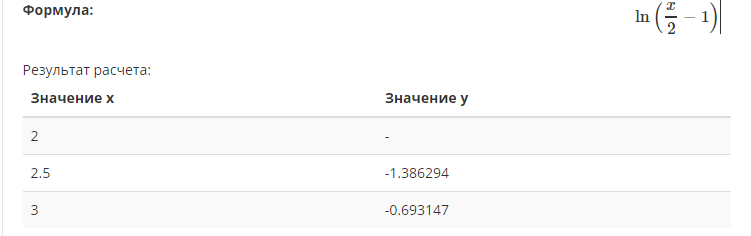
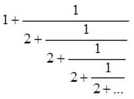

Мета: Опанувати теоретичні основи застосування рекурентних співвідношень для обчислення тригонометричних, експоненціальних, степеневих функцій та розробити програми функціональними мовам програмування для обчислення їх значень
Вибір середовища та мови функціонального програмування
В якості мови програмування була обрана Haskell, оскільки в ньому оптимально поєднанні імперативні і функціональні парадигми а також, легко будувати абстракції над даними і алгоритмами, що дозволяє думати про завдання, не відволікаючись на дрібниці. Середовищем було обрано Compile and Execute Haskell Online (Glorious Glasgow, v8.0.2)
Обчислити значення функції у, розвинувши функцію у ряд Тейлора. Аргумент х змінюється від -2 до 2 з кроком 0.5. Визначити похибку.

-- Завдання № 1
ln x eps n prev
| n == 0 = 0
| abs(result - prev) < eps = result
| otherwise = ln x eps (n + 1) result
where
sign = (-1) ** (n + 1)
operand = ((x - 1) ** n ) / n
result = prev + sign * operand
cycle_ catalog eps iterator =
if length(catalog) == iterator
then putStrLn ""
else if (0 < index) && (index < 2)
then do
print(index, lnIndex, logIndex, lnIndex - logIndex)
cycle_ catalog eps (iterator + 1)
else if index >= 2
then do
print(index, lnIndex2, logIndex2, (lnIndex2 - logIndex2))
cycle_ catalog eps (iterator + 1)
else cycle_ catalog eps (iterator + 1)
where
index = head [catalog !! iterator]
lnIndex = ln index eps 1 0 + ln (index / 2) eps 1 0
logIndex = log(index / 2) + log(index)
lnIndex2 = ln (index / 2 - 1) eps 1 0
logIndex2 = log(index / 2 - 1)
main = cycle_ [-1, -0.5, 0, 0.5, 1, 1.5, 2, 2.5, 3] 0.01 0

Обчислити нескінчений ланцюговий дріб, задавши значення точності при виклику функції.

-- Завдання № 2
circle :: Float -> Float-> Float -> Float
circle eps depth prev
| abs(result - prev) < eps = result
| otherwise = circle eps (depth + 1) result
where result = 1 + 1 / recursion (depth)
recursion depth =
if (depth == 0)
then 1
else 2 + 1 / recursion (depth-1)
main = print(circle 0.01 0 0)
У ході виконання даної лабораторної роботи було застосуванно рекурентні співвідношеня для обчислення тригонометричних, експоненціальних, степеневих функцій та розроблено програми функціональними мовою програмування для обчислення їх значень.